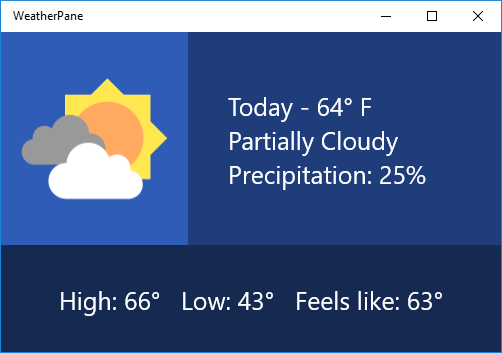

Tutorial: Use Grid and StackPanel to create a simple weather app
Use XAML to create the layout for a simple weather app using the Grid and StackPanel elements. With these tools you can make great looking apps that work on any device running Windows. This tutorial takes 10-20 minutes.
Important APIs: Grid class, StackPanel class
Prerequisites
- Windows 10 and Microsoft Visual Studio 2015 or later. (Newest Visual Studio recommended for current development and security updates) Install tools for the Windows App SDK.
- Knowledge of how to create a basic "Hello World" app by using XAML and C#. If you don't have that yet, click here to learn how to create a "Hello World" app.
Step 1: Create a blank app
- In Visual Studio menu, select File > New Project.
- In the left pane of the New Project dialog box, select Visual C# > Windows > Universal or Visual C++ > Windows > Universal.
- In the center pane, select Blank App.
- In the Name box, enter WeatherPanel, and select OK.
- To run the program, select Debug > Start Debugging from the menu, or select F5.
Step 2: Define a Grid
In XAML a Grid is made up of a series of rows and columns. By specifying the row and column of an element within a Grid, you can place and space other elements within a user interface. Rows and columns are defined with the RowDefinition and ColumnDefinition elements.
To start creating a layout, open MainPage.xaml by using the Solution Explorer, and replace the automatically generated Grid element with this code.
<Grid>
<Grid.ColumnDefinitions>
<ColumnDefinition Width="3*"/>
<ColumnDefinition Width="5*"/>
</Grid.ColumnDefinitions>
<Grid.RowDefinitions>
<RowDefinition Height="2*"/>
<RowDefinition Height="*"/>
</Grid.RowDefinitions>
</Grid>
The new Grid creates a set of two rows and columns, which defines the layout of the app interface. The first column has a Width of "3*", while the second has "5*", dividing the horizontal space between the two columns at a ratio of 3:5. In the same way, the two rows have a Height of "2*" and "*" respectively, so the Grid allocates two times as much space for the first row as for the second ("*" is the same as "1*"). These ratios are maintained even if the window is resized or the device is changed.
To learn about other methods of sizing rows and columns, see Define layouts with XAML.
If you run the application now you won't see anything except a blank page, because none of the Grid areas have any content. To show the Grid let's give it some color.
Step 3: Color the Grid
To color the Grid we add three Border elements, each with a different background color. Each is also assigned to a row and column in the parent Grid by using the Grid.Row and Grid.Column attributes. The values of these attributes default to 0, so you don't need to assign them to the first Border. Add the following code to the Grid element after the row and column definitions.
<Border Background="#2f5cb6"/>
<Border Grid.Column ="1" Background="#1f3d7a"/>
<Border Grid.Row="1" Grid.ColumnSpan="2" Background="#152951"/>
Notice that for the third Border we use an extra attribute, Grid.ColumnSpan, which causes this Border to span both columns in the lower row. You can use Grid.RowSpan in the same way, and together these attributes let you span an element over any number of rows and columns. The upper-left corner of such a span is always the Grid.Column and Grid.Row specified in the element attributes.
If you run the app, the result looks something like this.

Step 4: Organize content by using StackPanel elements
StackPanel is the second UI element we'll use to create our weather app. The StackPanel is a fundamental part of many basic app layouts, allowing you to stack elements vertically or horizontally.
In the following code, we create two StackPanel elements and fill each with three TextBlocks. Add these StackPanel elements to the Grid below the Border elements from Step 3. This causes the TextBlock elements to render on top of the colored Grid we created earlier.
<StackPanel Grid.Column="1" Margin="40,0,0,0" VerticalAlignment="Center">
<TextBlock Foreground="White" FontSize="25" Text="Today - 64° F"/>
<TextBlock Foreground="White" FontSize="25" Text="Partially Cloudy"/>
<TextBlock Foreground="White" FontSize="25" Text="Precipitation: 25%"/>
</StackPanel>
<StackPanel Grid.Row="1" Grid.ColumnSpan="2" Orientation="Horizontal"
HorizontalAlignment="Center" VerticalAlignment="Center">
<TextBlock Foreground="White" FontSize="25" Text="High: 66°" Margin="0,0,20,0"/>
<TextBlock Foreground="White" FontSize="25" Text="Low: 43°" Margin="0,0,20,0"/>
<TextBlock Foreground="White" FontSize="25" Text="Feels like: 63°"/>
</StackPanel>
In the first Stackpanel, each TextBlock stacks vertically below the next. This is the default behavior of a StackPanel, so we don't need to set the Orientation attribute. In the second StackPanel, we want the child elements to stack horizontally from left to right, so we set the Orientation attribute to "Horizontal". We must also set the Grid.ColumnSpan attribute to "2", so that the text is centered over the lower Border.
If you run the app now, you'll see something like this.

Step 5: Add an image icon
Finally, let's fill the empty section in our Grid with an image that represents today's weather—something that says "partially cloudy."
Download the image below and save it as a PNG named "partially-cloudy".
In the Solution Explorer, right click the Assets folder, and select Add -> Existing Item... Find partially-cloudy.png in the browser that pops up, select it, and click Add.
Next, in MainPage.xaml, add the following Image element below the StackPanels from Step 4.
<Image Margin="20" Source="Assets/partially-cloudy.png"/>
Because we want the Image in the first row and column, we don't need to set its Grid.Row or Grid.Column attributes, allowing them to default to "0".
And that's it! You've successfully created the layout for a simple weather application. If you run the application by pressing F5, you should see something like this:

If you like, try experimenting with the layout above, and explore different ways you might represent weather data.
Related articles
- For an introduction to designing Windows app layouts, see Windows app silhouettes
- To learn about creating responsive layouts that adapt to different screen sizes, see Define Page Layouts with XAML